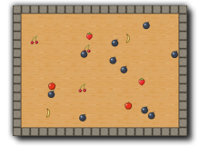

Tutorial
Page 15 of 15
Congratulations!
You have now finished your DnD game. As you saw, it was not very difficult, and your game should look something like this:

If it did not really work correctly, you can always load the game from the Examples folder. Once the game
is ready you might want to give it to your friends. But they might not have GameMaker. To this end
go to the File menu and click on Create Executable. Indicate the name (and location)
and press Save. You will now have a stand-alone game that you can give to everybody to play.
You have learned about the most important elements of GameMaker: sprites, backgrounds, sounds, music,
objects, events, actions, and rooms. You should now be able to start making your own games. But there is a
lot more to learn. You can check the help file or you can read some more tutorials. And there even are
books about GameMaker. You can access all this information through the Help menu. Enjoy!